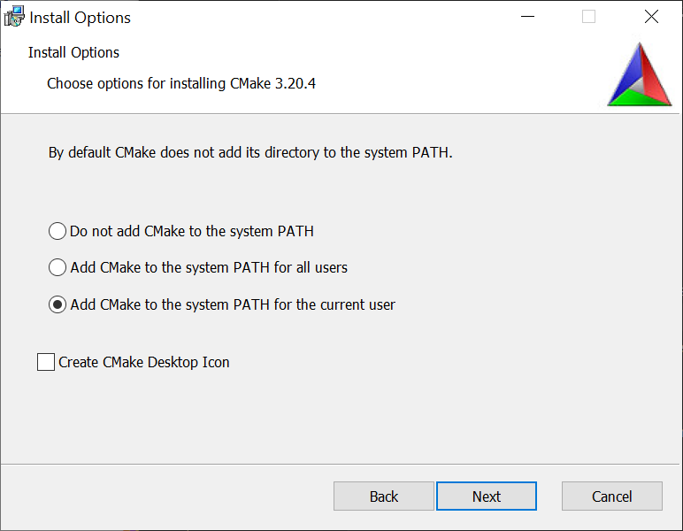

OpenVINO Object Detection for Unity Tutorial Pt.1 (Outdated)
8/11/2022:
- This tutorial is outdated. Use the new version at the link below.
- End-to-End Object Detection for Unity With IceVision and OpenVINO Pt. 1

Overview
In this tutorial series, we will cover how to perform object detection in the Unity game engine with the OpenVINO™ Toolkit. As demonstrated above, object detection models allow us to locate and classify objects inside an image or video. Combining this functionality with Unity unlocks significant potential for interactive applications.
These models can be trained to detect arbitrary types of objects provided there is sufficient training data. They can even be trained to detect specific people, expressions, gestures, or poses. The models used in this tutorial have been trained on the COCO (Common Objects in Context) dataset, which contains 80 different object categories.
We will be using the YOLOX model developed by Megvii. YOLOX builds on the YOLO (You Only Look Once) family of real-time object detection models and implements multiple recent advancements from object detection research. The YOLOX model provides one of the best tradeoffs between accuracy and inference speed at the time of writing.
Check out the video below to see how the model performs in different settings.
{% include youtube.html content=“https://youtu.be/opClIrHumzI” %}
To access the OpenVINO™ Toolkit inside Unity, we need to create a Dynamic link library (DLL) in Visual Studio. This will contain the code to perform inference with an object detection model. We can then call functions from this DLL inside a Unity application by importing it as a native plugin.
In this first part, we will ensure the prerequisite software is installed on our system and download pretrained object detection models in the OpenVINO Intermediate Representation format, along with some test videos.
Prerequisites
The following prerequisites are required to complete this tutorial.
Experience
This tutorial does not assume any prior experience with the OpenVINO™ Toolkit or Unity. However, some basic experience with Unity would be beneficial.
System Requirements
The target platform for this project is Windows 10 64-bit. The OpenVINO™ Toolkit does not appear to support 32-bit versions. Given that the OpenVINO™ Toolkit is designed for Intel hardware, an Intel CPU and/or GPU is highly recommended.
Unity
The first prerequisite we will want to set up is Unity. The Unity Editor can be installed through the Unity Hub, which can be downloaded from the link below.
- Unity Hub: (download)
We will be using Unity 2020 LTS. The exact version can be downloaded from the links below.
Note: The installation process will also install Visual Studio, one of the other prerequisites.
The tutorial below walks through the basics of Unity, from the installation process all the way to making an Angry Birds clone.
Visual Studio
Unity automatically includes Visual Studio when installing the Editor. However it can also be downloaded directly from the link below.
- Visual Studio Community 2019: (download)
Visual C++ Redistributables
The Visual C++ Redistributables should be installed along with Visual Studio. If not, they can be downloaded from the link below.
- Latest C++ Redistributables: (link)
CMake
The official OpenVINO™ installation guide lists CMake as a requirement. However, we do not need it for this project. Still, the latest release of CMake 64-bit is available at the link below.
- CMake: link
Note: Make sure to select one of the Add CMake to the system PATH options during the installation process.

Python
Python 3.6, 3.7, or 3.8 64-bit are needed to convert a model from ONNX format to OpenVINO’s intermediate representation (IR). We can install Python 3.8 from the Windows Store. This method automatically configures the Python installation to be accessible from the command line.
- Windows Store Python 3.8: (link)
The YOLOX models are already available in OpenVINO IR format, so Python is not required for this tutorial. However, models trained on custom datasets will need to be converted. The steps for converting models from ONNX format to OpenVINO IR are covered in a previous tutorial. The YOLOX models are also available in ONNX format on GitHub.
OpenVINO
We now have all the required prerequisites to install OpenVINO. We’ll be using OpenVINO 2021.3 for this tutorial. First time users need to fill out a registration form to download the toolkit.
Download OpenVINO IR Models
Megvii has already converted several variants of the YOLOX model to OpenVINO IR format and made them available on GitHub. Each variant provides a different tradeoff between accuracy and inference speed.
Download the folder containing the models from the link below. We will be using this folder in the final Unity application.
Each variant of the model has three files associated with it:
yolox_10.bin
yolox_10.mapping
yolox_10.xml
We will need the .bin and .xml files. The .xml files describe the network topology, including the layer operations and flow of data through the network. Here is a snippet from the top of an .xml file.
<?xml version="1.0" ?>
<net name="yolox_10" version="10">
<layers>
<layer id="0" name="inputs" type="Parameter" version="opset1">
<data element_type="f16" shape="1, 3, 640, 640"/>
<output>
<port id="0" names="inputs" precision="FP16">
<dim>1</dim>
<dim>3</dim>
<dim>640</dim>
<dim>640</dim>
</port>
</output>
</layer>
<layer id="1" name="Slice_4/Concat592120366" type="Const" version="opset1">
<data element_type="i64" offset="0" shape="4" size="32"/>
<output>
<port id="0" precision="I64">
<dim>4</dim>
</port>
</output>
</layer>The .bin file stores the constant values for the model learned during the training process.
Download Test Videos
We’ll be using several different videos to test the models’ performance on different object classes. These videos are available on Pexels, a free stock photos & videos site. Download the video in 1080p or Full HD when available. We will not be testing all 80 object classes, but these should provide a general idea of how the models perform in different settings. Feel free to try other videos as well.
[bus](https://www.pexels.com/video/footage-of-the-street-with-the-bus-passing-by-3474308/)[cat](https://www.pexels.com/video/a-playful-cute-kitten-1722593/)[person](https://www.pexels.com/video/a-woman-yoga-exercises-at-home-5381485/)[skateboard](https://www.pexels.com/video/teens-riding-skateboard-doing-grind-rail-5039831/)[train](https://www.pexels.com/video/a-train-leaving-a-station-3807783/)
Conclusion
That takes care of the required setup. In the next part, we will cover how to create a Dynamic link library (DLL) in Visual Studio to perform inference with an OpenVINO IR model.
Project Resources: